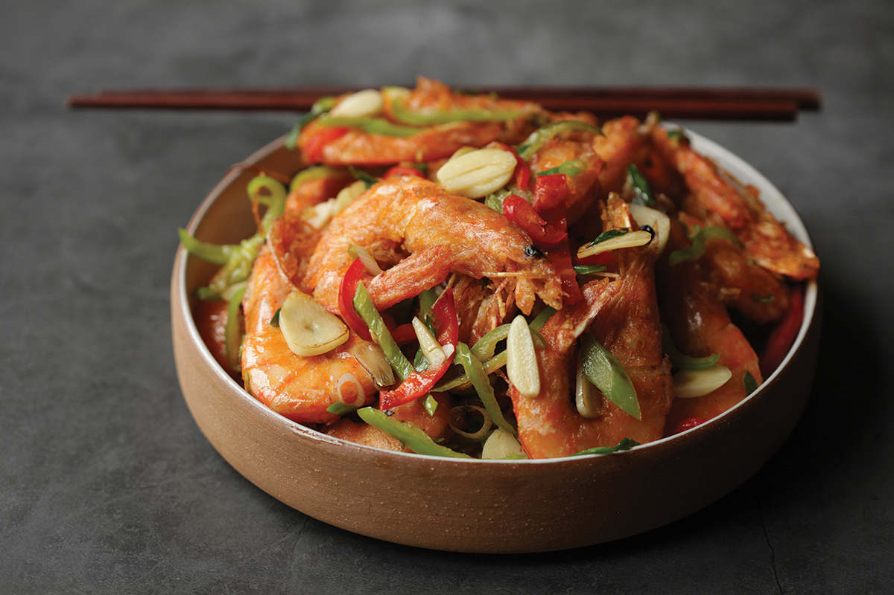
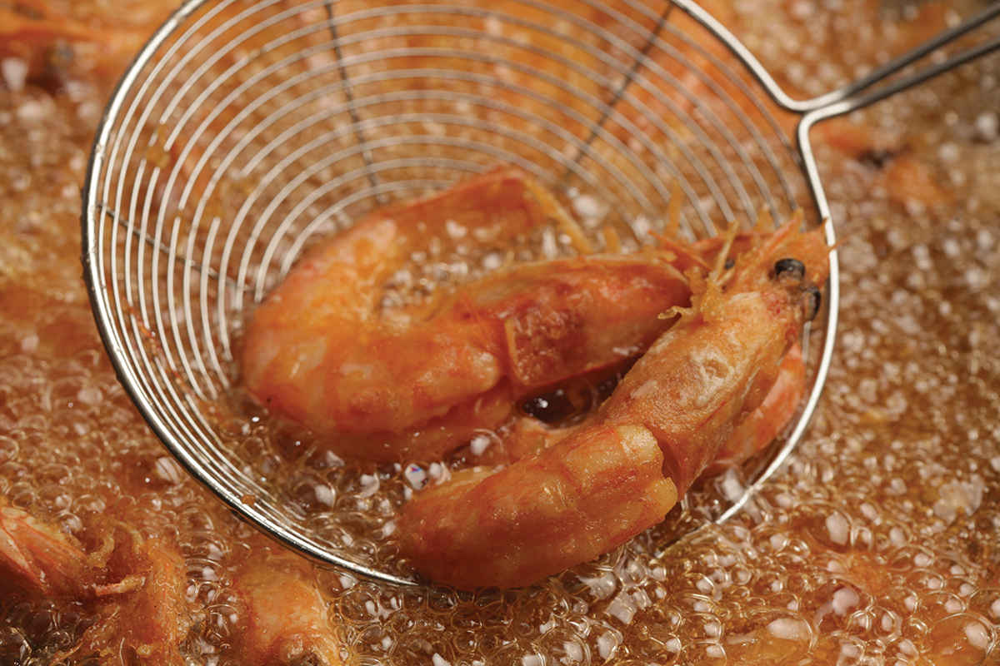
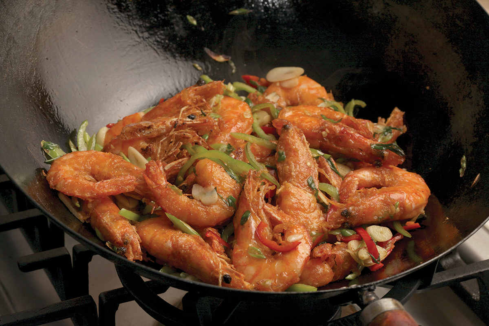

CANTONESE PEPPER AND SALTY SHRIMP



I can’t say that Phoenix Garden, with its slightly-too-gloppy sauces, dingy tables, and mildly rude waitstaff served the best or even the most authentic Cantonese cuisine in New York, but my oh my, how it’s fed me and my family over the years. When we first moved to New York in 1983, it was located in the Elizabeth Street mall. We’d wait in line for an hour or more under the glow of greenish blue fluorescent lights shining through a dim, greasy haze just to get a taste of its crisp and juicy salt and pepper shrimp, served in their crunchy shells, piled high with fresh garlic and chiles. There is still no shrimp in the world that can touch Phoenix Garden’s in its heyday.
That haze, incidentally, was no doubt due to years of poorly maintained ventilation hoods, which eventually led to the fire that forced them to close. For years we resorted to driving across the George Washington to hit their New Jersey counterpart, Phoenix Garden II. I’m still unclear on whether the man who ran the Jersey branch was really the identical twin of the New York branch operator or if it was all just a prank, but either way, their dry-fried chow fun and clams in black bean sauce had just as much wok hei as ever.
Their third and final incarnation on 40th Street and 2nd Avenue, run by the sons of the original owner, closed in the late 2010s, well after my sisters and I had already moved out of the area, which means that since then we’ve had to make those shrimp for ourselves. This recipe, intended to mimic the ones from Phoenix Garden, is one I developed specifically for my sister Pico, to help her re-create those crispy and salty shrimp even in the middle of a landlocked Montana winter.
It’s actually surprisingly simple: butterfly some shell-on shrimp (the largest you can get), give them a baking soda brine to plump them up, toss with cornstarch, then deep-fry them just until they’re crispy. Finally, stir-fry them with aromatics and a salt and pepper blend.
That salt and pepper blend can be as simple as ground white pepper and salt, but if you want the best flavor, it pays to not only toast the white peppercorns before grinding them but to actually toast the salt as well. Toasting salt in a carbon steel wok will give it a yellowish brown tinge and the distinct smoky aroma of wok hei as smoky vapors from the pan leave deposits on the surface of the salt (see “Toast Your Salt to Add Wok Hei to Any Dish,” here).
|
Yield Serves 4 |
Active Time 20 minutes Total Time 35 to 40 minutes |
12.5 grams is about 1⅓ tablespoons Diamond Crystal kosher salt, 1 tablespoon Morton’s kosher salt, or 2½ teaspoons table salt. The shrimp in this dish are meant to be eaten shell and all, though you can peel the shells as you eat if you don’t like their texture. I like to butterfly the shrimp for this recipe, slitting open the shell along the back so that the shrimp increases in surface area as it fries (see step-by-step directions on here). If you buy EZ-peel shrimp, they come already butterflied, making them ideal for this dish. The strained oil can be cooled, then stored in a sealed container in the fridge for another use.
INGREDIENTS
For the Shrimp:
½ liter (500 g/about 2 cups) very cold water
12.5 g salt (see Notes)
10 g (about 1½ teaspoons) baking soda
1 pound (450 g) large shell-on shrimp, deveined and butterflied (see Notes)
A cup or so of ice cubes
¼ cup (30 g) cornstarch
1 quart (1 l) peanut, rice bran, or other neutral oil
For the Stir-Fry:
10 medium garlic cloves (30 to 40 g), thinly sliced
4 scallions, thinly sliced
1 hot green chile, such as Chinese cowhorn, Anaheim, jalapeño, or serrano, thinly sliced
1 hot red chile, such as Fresno or red serrano, thinly sliced
2 teaspoons (15 g) Dry-Roasted Salt and Pepper Blend (see here)
DIRECTIONS
1 For the Shrimp: Combine the water, salt, and baking soda in a bowl and stir until the salt and baking soda are dissolved. Add the shrimp and stir to separate them and ensure the brine flows all around. Add the ice cubes and let the shrimp brine for at least 15 minutes and up to 30. Drain well.
2 Bring 2 quarts (2 l) water to a boil in your wok. Drain the shrimp and add to the boiling water. Cook, stirring, until the shrimp are beginning to get firm and are bright pink, about 45 seconds. Drain well and transfer to a rimmed baking sheet or large plate to air-dry for a few minutes. Transfer to a bowl and toss with the cornstarch until all the shrimp are thoroughly coated.
3 Wipe out the wok, add the oil, and heat to 400°F (200°C). With the wok over high heat, add half the shrimp and cook, agitating and stirring the shrimp constantly until crispy and barely cooked through, about 1 minute. Remove the shrimp with a spider and transfer them to a tray or large plate. Reheat the oil to 400°F (200°C) and repeat with the remaining shrimp. Carefully pour the hot oil out of the wok through a fine-mesh strainer set in a heatproof container (such as a large saucepan).
4 For the Stir-Fry: Wipe out the wok and return it to high heat until smoking. Add 2 tablespoons (30 ml) of the strained oil and swirl to coat. Add the garlic, scallions, and green and red chiles and stir-fry until fragrant, about 30 seconds. Add the shrimp and the salt and pepper blend and toss to coat. Transfer to a serving platter and serve immediately.